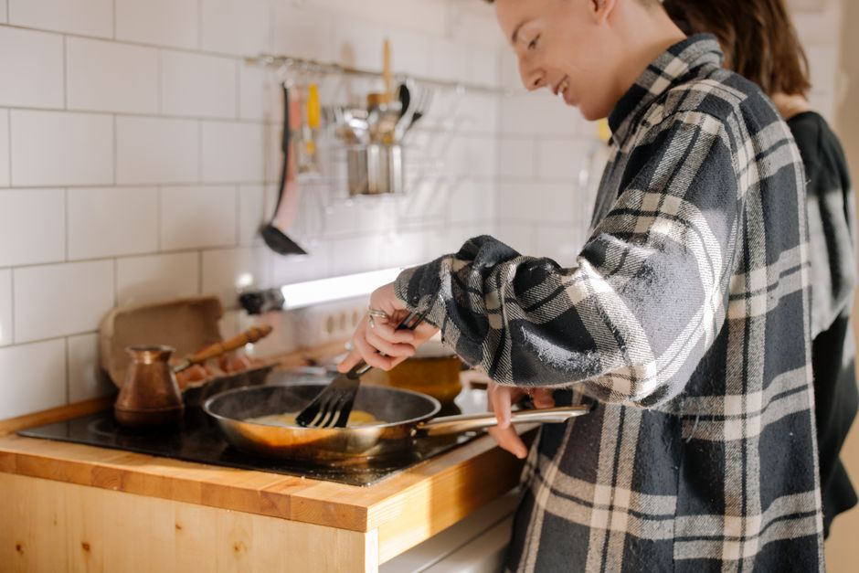

Formas económicas de preparar comida rápida para estudiantes

Photo: cottonbro studio / Pexels
Cuando falta tiempo y dinero, unas pocas recetas sencillas y una despensa bien surtida bastan. Estas son ideas de comidas listas en 15 a 30 minutos, con las precauciones básicas.
Una despensa básica
Arroz, pasta, avena, lentejas, garbanzos y alubias en conserva, tomate en conserva, aceite, cebolla, ajo, huevos, verduras congeladas y algunas especias permiten preparar decenas de comidas.
Ideas rápidas
- Pasta con salsa de tomate, verduras congeladas y un poco de queso.
- Arroz salteado con verduras y un huevo bien cocido.
- Tortilla o huevos revueltos bien hechos, con verduras y pan.
- Sopa de lentejas rojas con zanahoria, cebolla y caldo, lista en unos 25 minutos.
- Wraps de alubias, verduras y queso.
- Ensalada de garbanzos con pepino, tomate y aceite de oliva.
Cocina una vez, come varias veces
Dobla la receta y guarda la mitad en la nevera o el congelador. Refrigera en las dos horas siguientes a la cocción y consume en dos o tres días.
Bocadillos y tuppers
Los bocadillos con carne, huevo o pollo no deben pasar horas a temperatura ambiente. Usa una bolsa isotérmica con un acumulador de frío o elige rellenos que aguanten bien, como hummus, queso y verduras.
El microondas
Recalienta bien, pero no siempre de forma uniforme. Tapa el plato, remueve a la mitad y comprueba que esté caliente por todas partes. Usa solo recipientes aptos para microondas.
Consejos de presupuesto
Compara precios por unidad, prefiere productos de temporada o congelados y evita los platos preparados, que suelen costar más por la misma cantidad de comida.
Con un poco de planificación puedes comer variado y sano sin salirte del presupuesto.